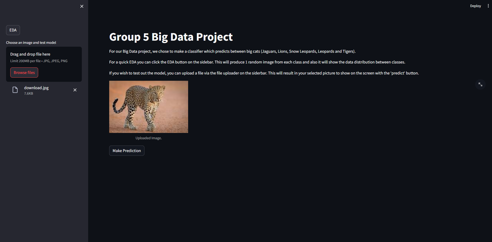
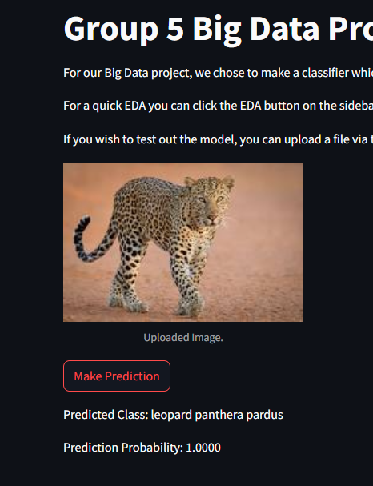
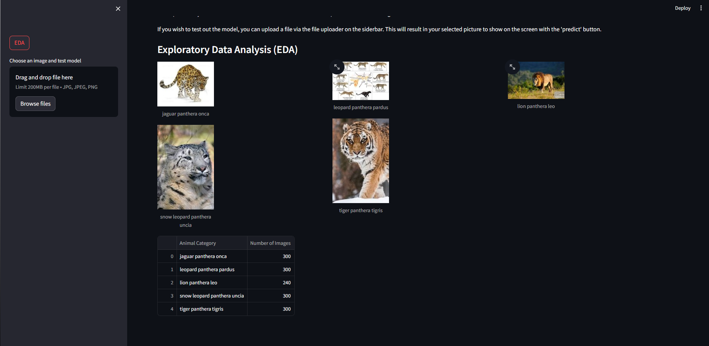

Big Cat Species Classifier
Project Overview
An implementation of an image classifier designed to identify five different big cat species: Jaguars, Lions, Snow Leopards, Leopards, and Tigers. Using deep learning techniques, the classifier achieves high accuracy in distinguishing between these similar-looking species.
Interactive Interface

Users can upload images through a simple drag-and-drop interface and receive instant predictions with confidence scores.

Exploratory Data Analysis

Dataset Distribution
jaguar (panthera onca):
300 images
leopard (panthera pardus):
300 images
lion (panthera leo):
240 images
snow leopard (panthera uncia):
300 images
tiger (panthera tigris):
300 images
Technical Implementation
Data Collection & Processing
- Custom web scraping script for image collection
- Automated data cleaning and organization
- Image preprocessing and augmentation pipeline
- Balanced dataset creation (~300 images per class)
Model Development
- Transfer learning using pre-trained CNN
- Fine-tuning on big cat dataset
- High accuracy predictions (100% on test sample shown)
- Real-time prediction capability
User Interface Features
- Drag-and-drop file upload
- Support for JPG, JPEG, PNG formats
- 200MB file size limit per image
- EDA button for dataset exploration
- Clear prediction display with confidence scores
Technical Note
The Streamlit application couldn't be hosted on cloud services due to Pathlib compatibility issues between Windows and Linux environments. Local demonstration screenshots are available to showcase the application's functionality.